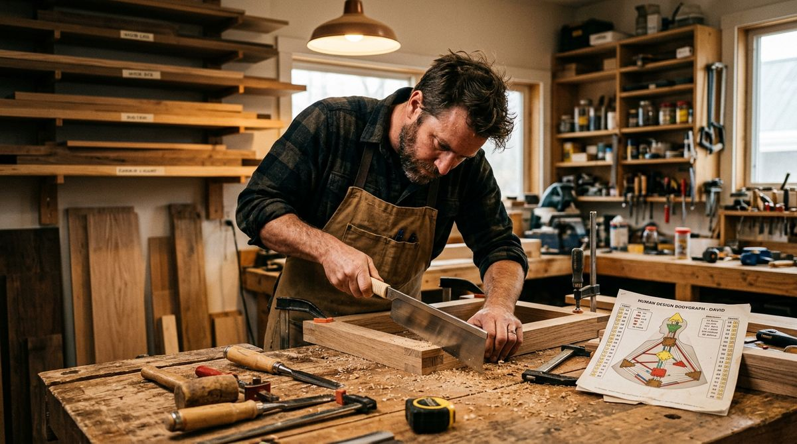

Generatore Human Design: come usare la tua energia senza finire in burnout
Sei un Costruttore Classico BG5 e arrivi a sera svuotato? Il burnout non dipende da quanto lavori, ma da cosa. Ecco come funziona la tua Risorsa Energetica.

Il burnout del Generatore Puro (Generatore Puro in BG5) non dipende da quanto lavora
Lavori otto ore, arrivi a sera e ti senti come se ne avessi fatte venti. Il giorno dopo la sveglia suona e non hai recuperato niente. Eppure conosci il tuo Tipo di Carriera (Tipo in Human Design), sai di avere la Risorsa Energetica (Centro Sacrale in HD) definita. Dovresti avere energia da vendere. Il punto è che il Generatore Puro (Generatore Puro in BG5) non si svuota perché lavora troppo. Si svuota perché lavora sulle cose sbagliate.
Questo è il meccanismo che la maggior parte delle guide su BG5 e Human Design semplifica o ignora del tutto. Avere un motore potente non basta. Serve capire quali condizioni lo accendono e quali lo spengono.
Cosa fa la Risorsa Energetica definita e perché non basta averla?
La Risorsa Energetica definita è un motore biologico. Si ricarica durante il sonno, si riattiva la mattina e produce energia lavorativa in modo costante per tutta la giornata. Circa il 37% della popolazione ha questa configurazione, il che rende il Generatore Puro il Tipo di Carriera più diffuso.
Fin qui tutto chiaro. Il problema è che questo motore non funziona come un generatore elettrico che alimenta qualsiasi apparecchio collegato. Ha un filtro preciso: risponde solo a ciò che riconosce come giusto. Se lo forzi su attività che non hanno superato quel filtro, l'energia si disperde. È come collegare una lavatrice a una presa che eroga corrente intermittente. La macchina si accende, gira, ma non completa mai il ciclo.
Un Generatore Puro che fa il lavoro giusto può reggere dodici ore e andare a letto stanco con la sensazione chiara di aver speso bene la giornata. Lo stesso Generatore, su un lavoro sbagliato, dopo sei ore è irritabile, spento, con la testa che gira a vuoto. La differenza non sta nelle ore. Sta nel fatto che nel primo caso la Risorsa Energetica stava rispondendo, nel secondo stava subendo.
Come funziona la strategia "rispondere agli stimoli"?
La strategia BG5 del Generatore Puro è rispondere. Una parola che crea più confusione di quanta ne risolva, perché viene letta come "stai fermo e aspetta". Il significato è diverso.
Rispondere significa che il tuo corpo ha bisogno di uno stimolo esterno prima di attivarsi. Può essere una domanda che ti fanno. Un'offerta di lavoro che leggi. Una proposta che arriva da un collega. Qualcosa che vedi, senti, incontri. In quel momento la Risorsa Energetica reagisce con un segnale fisico: una spinta nel torso, un suono gutturale che precede qualsiasi ragionamento. "Uh-huh" se l'energia c'è. "Uh-uh" se non c'è.
Quel segnale è più affidabile di qualsiasi analisi razionale tu possa fare. Il problema è che nessuno ti ha insegnato ad ascoltarlo. Fin da bambino ti hanno detto di decidere con la testa, fare pro e contro, essere ragionevole. Per un Generatore Puro, decidere con la testa è il modo più rapido per finire a fare cose che lo svuotano.
Come dice Valentina Russo: "Se la risposta è 'uh... ma sì, dai', la pancia ha detto no, è la mente che ha risposto."
Perché la frustrazione è il segnale più utile che hai?
La frustrazione del Generatore Puro non è un difetto emotivo. È il segnale dell'Ombra (not-self theme in HD), cioè l'indicatore preciso che stai operando fuori dalla tua meccanica.
Funziona così: ogni volta che inizi qualcosa senza aver prima ricevuto e ascoltato una risposta viscerale, stai spingendo. Stai usando la mente per scegliere dove mettere l'energia, al posto del corpo. E quando il corpo non ha dato il via libera, l'energia va comunque, ma va controvoglia. Il risultato è uno stato cronico di dispersione: fai le cose, le porti a termine, ma senti che qualcosa non torna. Ti svegli già stanco di quello che devi fare.
Questa frustrazione non è episodica. È uno sfondo costante. Si manifesta come irritabilità, senso di spreco, l'impressione di correre senza arrivare da nessuna parte. Se la riconosci, hai già il primo dato utile: in quell'area specifica della tua vita stai forzando invece di rispondere.
Il burnout arriva dal "dire sì con la testa"
Il meccanismo del burnout nel Generatore Puro ha una dinamica precisa. Qualcuno ti chiede qualcosa. Può essere il capo, un amico, un partner. La tua mente valuta: è ragionevole, posso farlo, dovrei farlo. Dici sì. Ma la pancia non si è mossa. Nessun "uh-huh", nessuna spinta dal torso.
Quel sì mentale impegna la tua Risorsa Energetica su qualcosa che non ha superato il filtro corporeo. L'energia parte, ma parte frenata. Dopo un sì mentale ne arriva un altro, poi un altro. In pochi mesi hai un'agenda piena di impegni scelti dalla testa. E ogni mattina il motore si ricarica, ma si scarica su cose che non gli appartengono.
Dare la propria energia a qualsiasi richiesta è come dare la carta di credito a chiunque la chieda. Tecnicamente funziona. Praticamente ti ritrovi in rosso.
Gli errori più frequenti seguono lo stesso schema: iniziare progetti perché "ha senso", restare in situazioni che non producono soddisfazione per senso di dovere, aiutare altri senza che il corpo abbia risposto con un sì chiaro. Ogni volta il costo è lo stesso: energia dispersa, frustrazione accumulata, burnout in avvicinamento.
Come influisce l'Autorità Decisionale sulle tue scelte?
Il modo in cui il Generatore Puro prende decisioni dipende dalla sua Autorità Decisionale (Autorità Interna in HD). Esistono due configurazioni principali.
Se non hai l'Intelligenza Emotiva (Plesso Solare in HD) definita, la tua Autorità è Sacrale. Significa che la risposta viscerale è immediata e definitiva. Quando qualcuno ti fa una domanda e senti quella spinta nel torso, quella è la tua risposta. Non ha bisogno di tempo, non migliora ripensandoci. Anzi, più ci pensi, più la mente la sovrascrive.
Se invece hai l'Intelligenza Emotiva definita, la tua Autorità è Emotiva. Qui il meccanismo cambia: la prima reazione è colorata dall'onda emotiva del momento. Sei nel picco e tutto sembra fantastico. Sei nel calo e tutto sembra inutile. La decisione corretta arriva quando l'onda si stabilizza, dopo ore o giorni. La regola pratica è semplice: se sei molto entusiasta o molto scoraggiato, non è il momento di decidere.
Conoscere la propria Autorità Decisionale cambia il modo in cui gestisci ogni scelta. Un Generatore Puro con Autorità Sacrale che aspetta troppo spreca tempo. Uno con Autorità Emotiva che decide subito spreca energia su scelte distorte dall'onda.
Perché il sonno del Generatore Puro dipende da come chiudi la giornata?
Un aspetto pratico che incide ogni singola notte. La Risorsa Energetica definita produce energia per tutta la giornata. Se arrivi a sera e quel motore è ancora attivo, andare a letto significa sdraiarsi con un motore acceso. Il risultato: difficoltà ad addormentarsi, sonno frammentato, risvegli frequenti.
La soluzione ha a che fare con la scarica dell'energia residua prima di coricarti. Attività fisica leggera, una passeggiata, una doccia lunga, cucinare, leggere qualcosa che ti assorba. Qualsiasi cosa che permetta alla Risorsa Energetica di completare il suo ciclo e spegnersi. Quando il motore si ferma, il sonno arriva naturale e il giorno dopo la ricarica è completa.
Chi ignora questo meccanismo compensa con melatonina, tisane o schermi spenti un'ora prima. Sono palliativi. Il punto è che il Generatore Puro ha bisogno di scaricare fisicamente l'energia rimasta, non di rilassarsi mentalmente.
La soddisfazione come bussola quotidiana
La soddisfazione del Generatore Puro non è eccitazione. Non è euforia. È quella sensazione precisa di andare a letto stanco, con la certezza tranquilla di aver usato la propria energia su qualcosa che meritava. È il segnale opposto alla frustrazione: dove la frustrazione dice "stai forzando", la soddisfazione dice "oggi hai risposto a ciò che era giusto per te".
Questa distinzione è operativa. Se chiudi una giornata con soddisfazione, le scelte fatte in quella giornata erano allineate. Se chiudi con frustrazione o svuotamento, almeno una scelta è stata forzata dalla mente. Puoi usare questo criterio ogni sera per calibrare le decisioni del giorno dopo.
Il lavoro del Generatore Puro non è produrre di più. È selezionare con precisione dove mettere il proprio motore. E la selezione non avviene nella testa. Avviene nella pancia, ogni volta che qualcosa si presenta e il corpo risponde prima che la mente intervenga.
Se vuoi sapere con esattezza quale configurazione ha la tua Risorsa Energetica, quale Autorità Decisionale governa le tue scelte e dove stai disperdendo energia, puoi prenotare una Panoramica BG5® del Disegno di Carriera con Valentina Russo: 90 minuti, 350 euro, per mappare il tuo Tipo di Carriera, la tua Strategia e la tua Autorità.
Domande Frequenti
Cos'è il Costruttore Classico nel sistema BG5?
Il Costruttore Classico (Generatore Puro in Human Design) è il Tipo di Carriera più comune, circa il 37% della popolazione. Ha la Risorsa Energetica (Centro Sacrale) definita: un motore biologico che si ricarica durante il sonno e fornisce energia lavorativa costante. Si distingue dal Costruttore Rapido (Generatore Manifestante) perché la sua Gola non è collegata direttamente a nessun motore tramite canale.
Perché il Costruttore Classico finisce in burnout se ha tanta energia?
Il burnout del Costruttore Classico non arriva dal lavorare molto. Arriva dal lavorare su attività sbagliate: progetti scelti dalla mente invece che dalla risposta viscerale, impegni mantenuti per senso di dovere, energia data a richieste che non producono soddisfazione. La Risorsa Energetica è abbondante, ma si esaurisce rapidamente quando alimenta direzioni che il corpo non riconosce come proprie.
Come funziona la risposta viscerale del Costruttore Classico?
La risposta viscerale è un segnale fisico che precede il pensiero razionale. Si manifesta come una reazione nel torso: un suono gutturale 'uh-huh' quando l'energia c'è, o 'uh-uh' quando non c'è. Ha bisogno di uno stimolo esterno per attivarsi: una domanda, una proposta, una situazione concreta. Se la risposta è 'ma sì, dai', ha risposto la mente, non la pancia.
Qual è la differenza tra Costruttore Classico e Costruttore Rapido?
Il Costruttore Classico (Generatore Puro) ha la Risorsa Energetica definita senza collegamento diretto tra motori e Gola. La sua energia è profonda e costante, adatta alla specializzazione. Il Costruttore Rapido (Generatore Manifestante) ha un canale che collega un centro motore alla Gola: può agire più velocemente, ma tende a saltare passaggi. Per entrambi la strategia è la stessa: rispondere prima di agire.
Vuoi scoprire la tua meccanica?
Se non conosci ancora il tuo Tipo, calcola gratis la tua carta in pochi secondi. Se lo sai già, prenota una Panoramica BG5® e scopri come funziona nel tuo caso specifico.